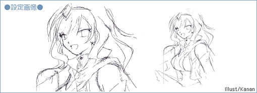
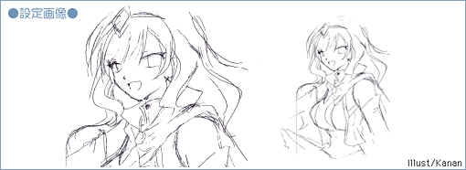

|
|||||||||

| ●何为 塔琪拉 |
|
――漫画及游戏方面（GAII） 卡鲁亚通过嗅到酒精的气味（极少数情况下是刺激物），人格会切换成特基拉。与卡鲁亚性格相反，纹章机的战斗由特基拉负责。 ――动画方面（GAII） NEUE（诺伊）出身，能够使用这个世界的独特技术——魔法，被称为魔女的存在。她在其中似乎也是相当有实力的人。 性格温和，但以酒精的香味等刺激为契机，会切换成充满活力的另一个人格·特基拉。 |
© BROCCOLI

|
||||||||||||||||||||||
|
© BROCCOLI |
||||||||||||||||||||||